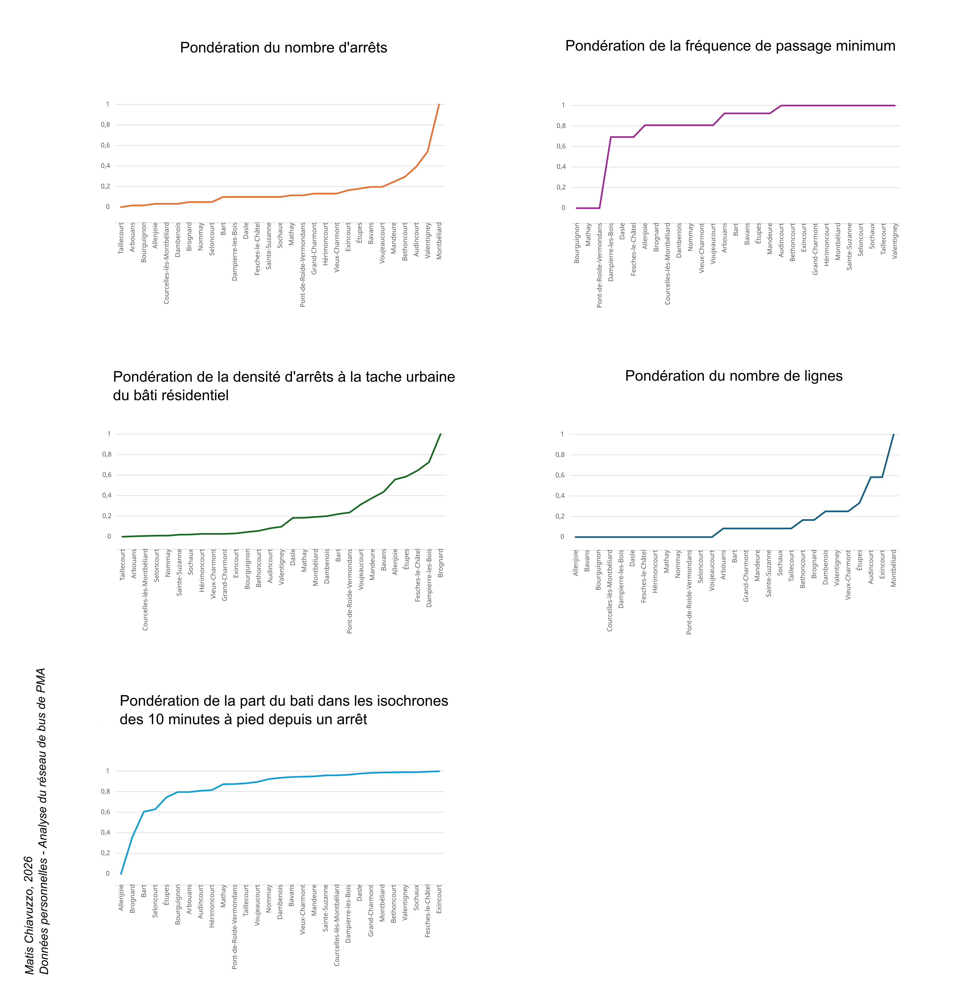
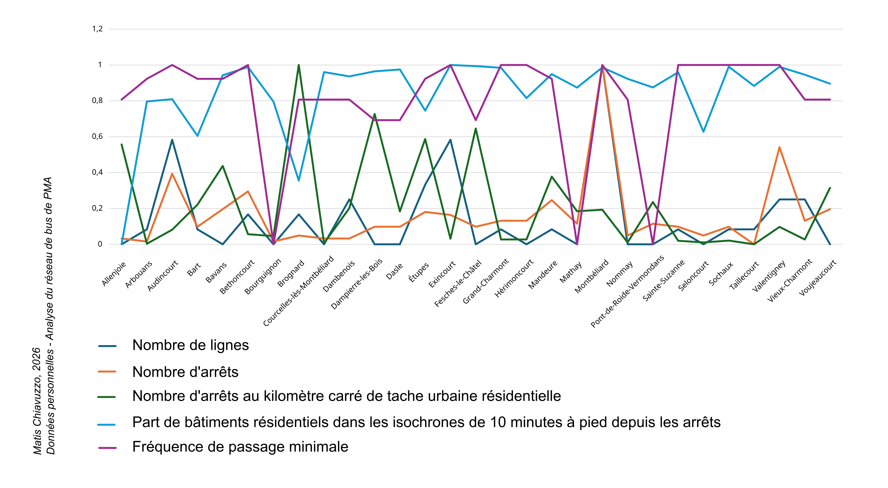
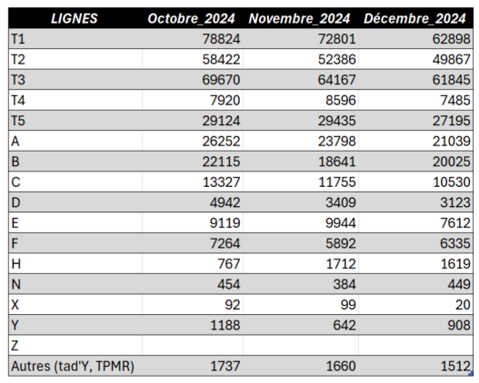
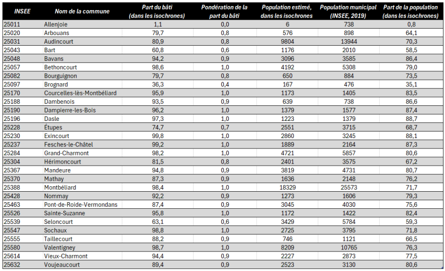

Si l’on s’intéresse dans un premier temps au nombre d’arrêts par communes, nous pouvons constater un « fossé » quant à leur présence entre des communes structurantes, centrales, versus des communes périphériques. En effet, les communes de Montbéliard, de Valentigney et d’Audincourt ressortent comme ayant un grand nombre d’arrêts par rapport aux autres communes de l’étude. Cela témoigne d’un réseau construit autour des ces trois communes, qui concentrent comme expliqué précédemment les zones d’emplois, d’activités et de commerces principaux. En ce qui concerne le nombre de lignes, Montbéliard s’installe toujours à la première place. Puis l’on retrouve la commune d’Exincourt et d’Audincourt. La commune de Valentigney, qui concentrait plus d’arrêts possède cependant moins de lignes, et se retrouve alors ici à la 6ème place.
Pour la fréquence minimale de passage, la distribution se structure en paliers, avec beaucoup de communes ayant une même valeur. La fréquence minimale de passage par commune semble rassembler plus de communes sur une même valeur, soit une meilleure égalité vis-à-vis de cet indicateur que les autres.
En ce qui concerne la densité d'arrêts à la tache urbaine du bâti résidentiel, nous pouvons constater que les communes qui pour les autres indicateurs possédaient des valeurs faibles, voire très faible ont ici des valeurs fortes. Soit un nombre d’arrêts conséquents vis-àvis de la surface des taches bâtis résidentiels, ce qui traduit dans ces communes une forte densité d’arrêts même si ils ne sont pas nombreux. Rapportés à la tache urbaine, ils apparaissent comme très présents.
En ce qui concerne la part du bâti dans les isochrones des 10 minutes à pied depuis un arrêt, nous pouvons constater que le graphique présente une dynamique contraire aux autres indicateurs. Si les distributions suivaient jusqu’ici des allures exponentielles, dans le cas présent elles se rapprochent d’une courbe de Lorenz. On observe un "effet de coude" très marqué au début. Cela signifie que les premières communes de la liste ont des valeurs faibles par rapport aux autres. À partir de Mathay, la progression devient beaucoup plus lente et linéaire, ce qui indique que les communes restantes ont des valeurs beaucoup plus homogènes et fortes. En somme, l’analyse de ces différents indicateurs, montre que tous ces indicateurs sont complémentaires et permettent de prendre en compte différentes dimensions structurantes vis-à-vis de l’accessibilité. De plus, nous pouvons d’ores et déjà poser l’hypothèse que les indicateurs "nombre d’arrêts", "nombre de lignes" et "fréquence de passage minimum" sont corrélés.
Ce graphique permet de comprendre que si la proximité physique aux arrêts semble acquise presque partout (isochrones de 10 min), la qualité de service (fréquence) reste le privilège de certaines zones. Pour certaines communes, l'infrastructure existe (les arrêts sont là), mais le service ne suit pas nécessairement.


Dans des pôles comme Montbéliard, Audincourt ou Exincourt, on observe une convergence quasi parfaite des cinq indicateurs vers le haut de l'échelle (proche de 1). Ici, la complémentarité est maximale : un nombre élevé de lignes (bleu foncé) s'accompagne d'une fréquence de passage élevée (violet) et d'une couverture de marche de 10 minutes (bleu clair) saturée. Cela témoigne d'un service complet où la quantité de l'offre répond à une densité de bâti importante.
De nombreuses communes (comme Voujeaucourt ou Hérimoncourt) maintiennent un score de "Part de bâtiments résidentiels à 10 minutes" élevé alors que la fréquence de passage ou le nombre de lignes chutent. Cela indique que si l'infrastructure physique existe (les arrêts sont bien placés par rapport aux logements), le service temporel est le maillon faible. L'accès est géographiquement assuré, mais l'utilité réelle pour l'usager est limitée par l'attente entre deux bus.
L'indicateur de densité (Vert) comme marqueur d'urbanité : la courbe verte (arrêts par km² de tache urbaine) agit comme un révélateur de la compacité des communes. À Brognard ou Dampierre-les-Bois, on note des pics de densité d'arrêts qui ne sont pas toujours suivis par une fréquence élevée. Cela suggère des communes au tissu urbain restreint où quelques arrêts suffisent à couvrir tout le territoire résidentiel, mais sans pour autant bénéficier d'un cadencement de type "urbain dense".
La discrétisation par écarts-types (avec k impair) centre l'analyse sur la moyenne du réseau. Ce choix statistique ne mesure pas l'offre brute, mais l'écart à la norme, il isole les communes "standards" dans une classe centrale pour mieux faire ressortir les anomalies. Les pics vers 1 et les chutes vers 0 révèlent ainsi des ruptures d'équité territoriale, où certaines communes surperforment ou décrochent statistiquement par rapport à l'équilibre moyen du Pays de Montbéliard.
Ainsi, comme nous pouvons le constater sur la carte, certaines communes se détachent avec un indicateur d’accessibilité fort. C’est le cas de la commune de Montbéliard, qui possède selon l’indicateur mis en place l’accessibilité au réseau la plus forte, suivi par la commune d’Audincourt. Autour de ces communes, on retrouve une structure de décroissance de l’accessibilité à partir des deux communes centrales sur le réseau (Audincourt et Montbéliard). Ainsi, certaines communes apparaissent comme ayant un indice d’accessibilité faible.
La carte met en évidence une structure en « cœur-périphérie » : Montbéliard, centre historique et administratif, surplombe le classement avec un indice de 1, affirmant son rôle de nœud d’interconnexion majeur et de pôle de convergence du réseau. Autour de ce noyau, une première couronne urbaine composée d'Audincourt, Valentigney et Exincourt possède une connectivité solide, témoignant de la densité historique de l’ancien bassin industriel. Cependant, dès que l’on s’éloigne de cet axe central, le gradient d’accessibilité décroit. Le graphique en barres illustre ce décrochage : une grande majorité de communes se situe sous le seuil de 0,4, révélant une fracture territoriale marquée entre l'agglomération centrale et les zones périphériques (comme Mathay ou Bourguignon), où l'offre de transport semble rester marginale. Nous pouvons constater que si le réseau est très efficace pour desservir le pôle urbain dense, il laisse apparaître des zones de faible connectivité pour les habitants en marge de l'agglomération.
Cette analyse s’applique seulement à une partie des communes de l’agglomération, puisque l’analyse ne prend en compte que les communes ayant au moins un arrêt. De ce fait toutes les autres communes, sont considérées comme ayant une accessibilité nulle au réseau. Ce qui traduit pour ces autres communes une forte dépendance à la voiture. De même ce constat d’une dépendance forte à la voiture peut s’étendre sur l’ensemble du territoire, puisque les chiffres sur la fréquentation mensuelle des différentes lignes restent faibles comparés au nombre d’actifs dans les communes ayant au moins un arrêt.

Si l'on confronte les 78 824 validations de tickets mensuels de la ligne T1 (la plus fréquentée) aux 60 000 actifs que compte le territoire de PMA, le constat est simple, le recours au bus reste faible pour les travailleurs. En considérant qu'un actif utilise le réseau pour un aller-retour quotidien (soit environ 40 validations par mois), la ligne T1 ne capterait qu'environ 2 000 usagers par jours, comparé aux 60 000 potentiels si tous les travailleurs du territoire se rendaient au travail en bus.
Les chiffres sont d’autant plus révélateur que les données de validation incluent toutes les populations (scolaires, étudiants, retraités, …), ce qui dilue encore plus la part réelle des actifs dans ces statistiques. Ce volume global, réparti sur un mois complet, souligne une forte dépendance à la voiture individuelle pour les déplacements domiciletravail. Malgré un maillage fin par bâtiment et une offre de transport structurée (THNS), l'automobile demeure le mode de déplacement privilégié dans l'agglomération.
Ce choix des travailleurs et autres individus peut s’expliquer par un réseau qui ne répond pas suffisamment aux besoins de ces usagers, ou encore des fréquences de passages trop faibles, ou encore par des temps d’accès a pied depuis le domicile trop élevé.
Si l’on observe cette cartographie des isochrones de 1 à 10 minutes (avec un pas de 1 minute), l’ensemble des communes sont très bien couvertes. En effet, la plupart des bâtiments se situent dans la borne de ces 10 minutes.
Si l’on complète cette analyse avec des données chiffrées (présentées dans la figure ci-dessous), nous pouvons constater qu’en moyenne sur l’ensemble de ces communes, environ 85% des bâtiments résidentiels sont inclus dans les différents isochrones calculés. Toutefois, avec une étendue de 98,60, les valeurs sont très disparates, et pour certaines fortement opposées. Entre la commune d’Exincourt, où 99,75% des bâtiments résidentiels sont dans les isochrones et la commune d’Allenjoie, où seulement 1,14% des bâtiments résidentiels y sont inclus, la différence est conséquente. Cela traduit pour la commune d’Allenjoie, une présence physique des arrêts et des lignes très faibles et/ou une présence qui ne permet pas de capter les quartiers résidentiels.
Avec un écart-type d'environ 21,12, on observe une dispersion importante des données autour de la moyenne (85), ce qui indique que les valeurs de la série sont assez hétérogènes et s'éloignent de manière significative du score central.
L’analyse de la part de population située à moins de 10 minutes à pied d’un arrêt de bus révèle une accessibilité globale satisfaisante, mais très disparate selon les communes. Avec une moyenne de 72,54 %, le réseau de transport couvre théoriquement près des trois quarts des résidents. Ce chiffre indique une offre de transport en commun qui pour la plupart des habitants est à portée immédiate (en moins de 10 minutes a pied). Toutefois, l'écart-type de 17,59 souligne une rupture d'équité territoriale significative entre les différentes communes du périmètre d'étude. Ainsi, nous pouvons identifier deux extrêmes, les zones de forte connectivité, dans les secteurs les plus denses, où l'accessibilité culmine à 88,69 %. Ces communes présentent un maillage d'arrêts optimisé où la quasi-totalité de l'habitat est captée par les isochrones de 10 minutes. Cela face à des zones ou la rupture de service est importante, avec une chute à un taux de 0,81 %. Pour ces territoires, l'offre de bus est quasi inexistante ou totalement déconnectée des zones résidentielles.
L'étendue de 87,87 points entre ces deux extrêmes montre que la proximité du réseau n'est pas une constante géographique. Cette forte dispersion statistique suggère que le "cœur de cible" démographique est atteint en moyenne, mais qu’il subsiste des zones blanches importantes où le temps de marche excède les seuils d'attractivité standards du transport collectif.
La comparaison entre ces deux indicateurs révèle un décalage structurel important. Alors que le réseau de bus couvre en moyenne 84,69 % des surfaces bâties, il ne dessert que 72,54 % de la population communale. Cet écart de plus de 12 points laisse poser l’hypothèse que le maillage actuel des arrêts de bus privilégie les zones d'activités, les équipements ou les centres denses au détriment de certaines zones résidentielles périphériques.
L'écart-type élevé observé dans les deux jeux de données (21,12 pour le bâti et 17,59 pour la population) confirme une rupture territoriale. Ce qui laisse émerger l'existence de "zones blanches", malgré une présence de bâti parfois élevée. Cela indique que dans certaines communes, les arrêts de bus sont positionnés de manière optimale pour le flux de transit ou d'activités, mais ne répondent pas aux besoins de mobilité quotidienne des résidents à leur domicile (c’est par exemple le cas de la commune d’Allenjoie, où la seule ligne passante dans la commune dessert une zone d’activité).
Ces données chiffrées, combinées avec les données présentées sur la cartographie permettent de visualiser des zones blanches et une certaine structure de l’offre et de la desserte sur le territoire.

Toutefois, les données présentées dans la figure ci-dessus doivent être considérées comme consultatives, elles permettent de dresser un tableau des dynamiques d’inclusion des populations selon les communes, mais comportent des limites méthodologiques. D'une part, le nombre d’individus situé dans la borne des 10 minutes est issu d’une attribution spatiale basée sur le carroyage de l’INSEE. D'autre part, nous mettons ces chiffres en parallèle avec la population municipale des communes, alors que les données carroyées sont définies à partir des foyers fiscaux. Les sources n'étant pas identiques, de légers écarts peuvent apparaître.
Pour autant, cette analyse permet de constater des contrastes importants. Le réseau capte un grand nombre d'habitants dans certaines communes, mais dans d'autres une part importante de la population est exclue du réseau selon les critères de nôtre analyse. Au total, ce sont d’après ces estimations environ 74% des populations qui ont un accès au réseau selon le critère des 10 minutes à pied depuis les arrêts (en ne prenant en compte que les communes ayant au moins un arrêt). Tandis que si nous considérons toutes les communes de l’agglomération, c’est 63% qui a un accès au réseau d’après nos estimations.